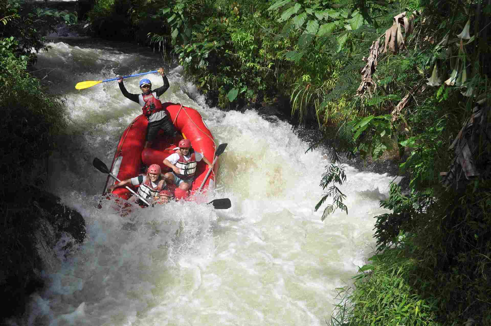
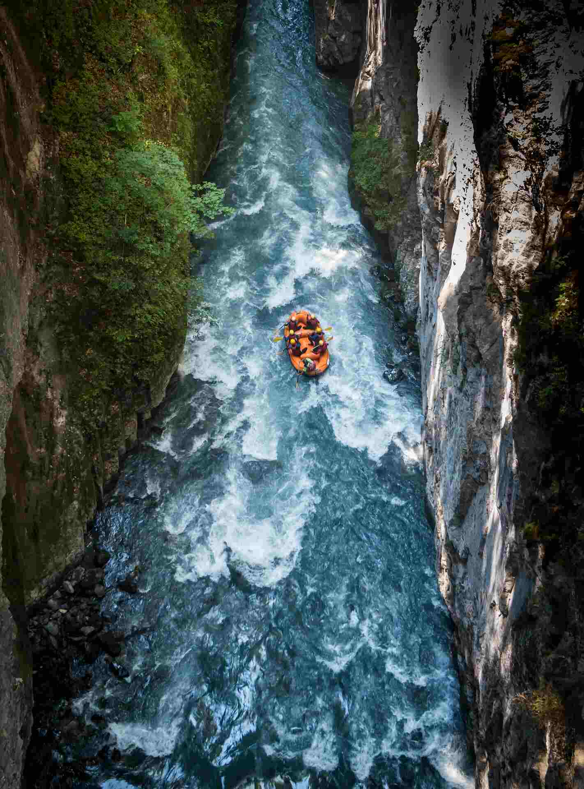
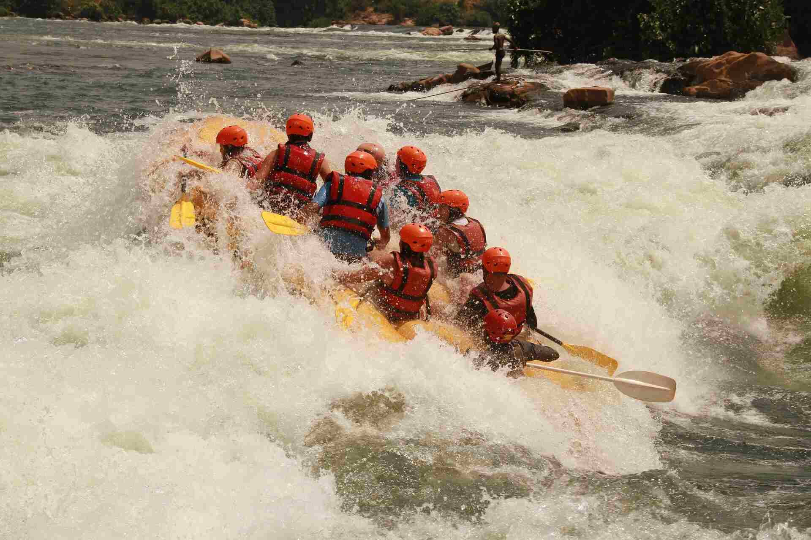

Half-Day Express Run
Ideal for beginners and families seeking a swift adrenaline rush. Experience thrilling Class II and III rapids along scenic river bends, complete with basic paddle training and safety gear.

Ideal for beginners and families seeking a swift adrenaline rush. Experience thrilling Class II and III rapids along scenic river bends, complete with basic paddle training and safety gear.

A full day of intense Class III and IV rapids navigating steep canyon walls. Includes a gourmet riverside lunch, scenic photo stops, and guided side hikes along untouched river trails.

Relax and unwind as dusk hits the water. This peaceful Class I-II float features breathtaking sunset views, wildlife watching, and light evening refreshments on the shore.
| Trip Name | Duration | Rapid Difficulty | Min. Age | Price |
|---|---|---|---|---|
| Half-Day Express Run | 3 Hours | Class II - III | 8+ | $75 per person |
| Canyon Falls Expedition | 6 Hours | Class III - IV | 12+ | $145 per person |
| Sunset River Float | 2.5 Hours | Class I - II | 6+ | $65 per person |
| Devil's Teeth Extreme | Full Day | Class IV - V | 16+ | $195 per person |